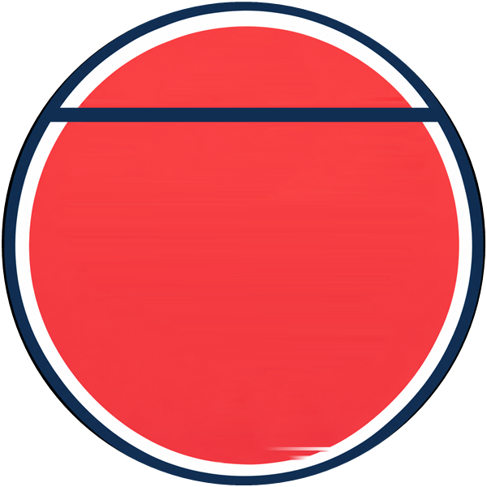
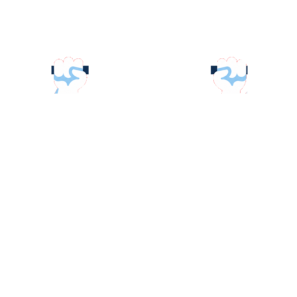

Swan mit Weihnachtsmütze
Testversion, nicht verlinkt. Die Mütze ist ein eigenes SVG und zieht sich mit dem Kopf hoch.


Testversion, nicht verlinkt. Die Mütze ist ein eigenes SVG und zieht sich mit dem Kopf hoch.

